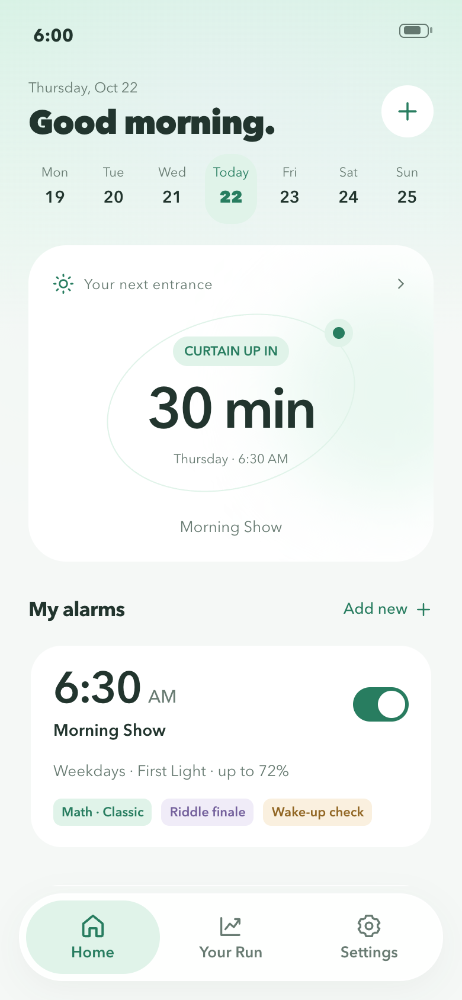
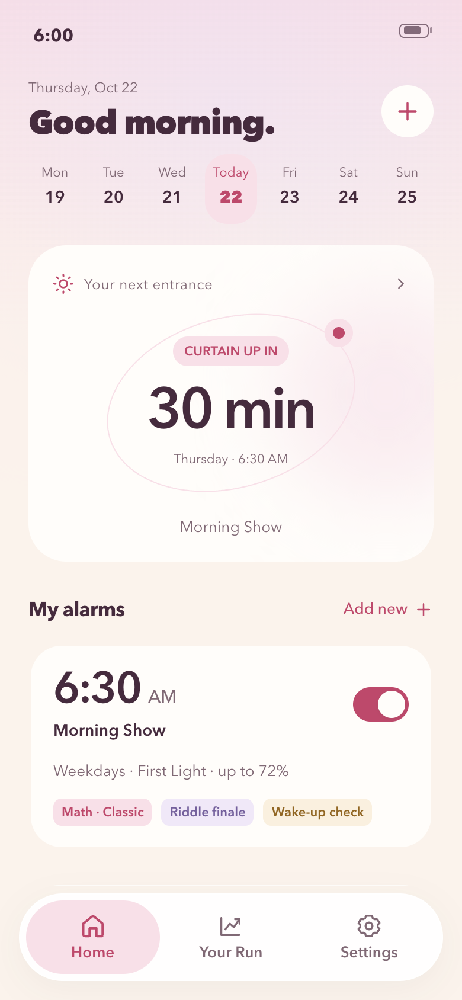
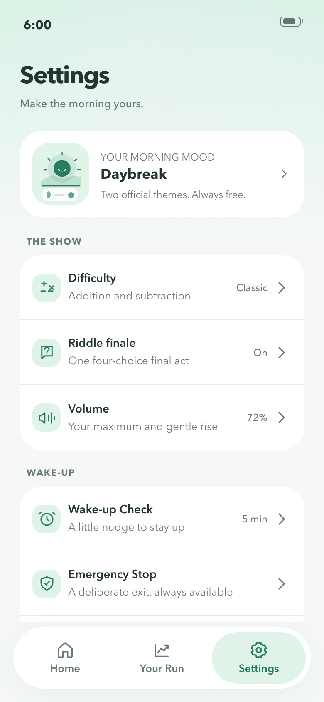
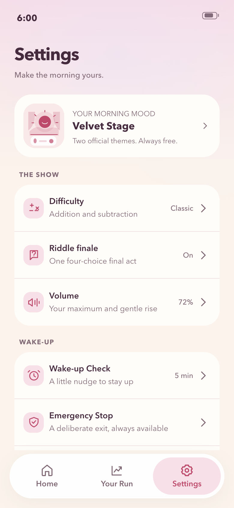
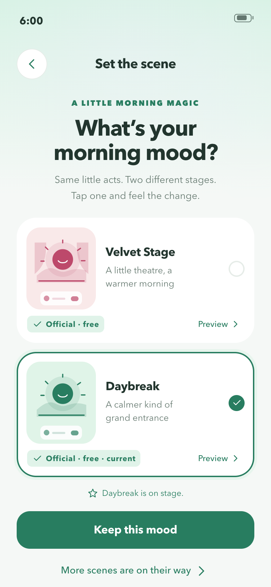
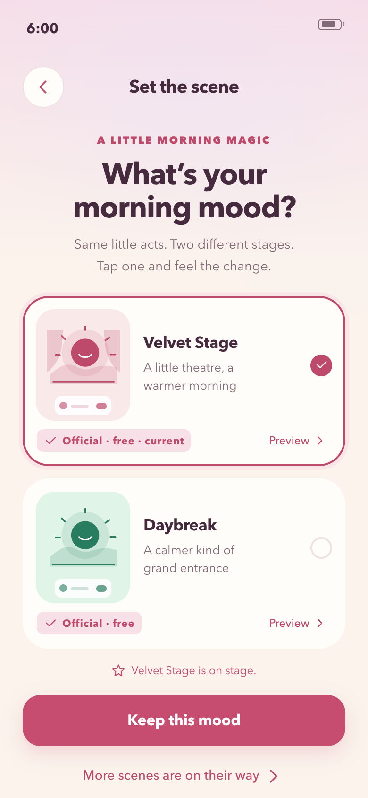
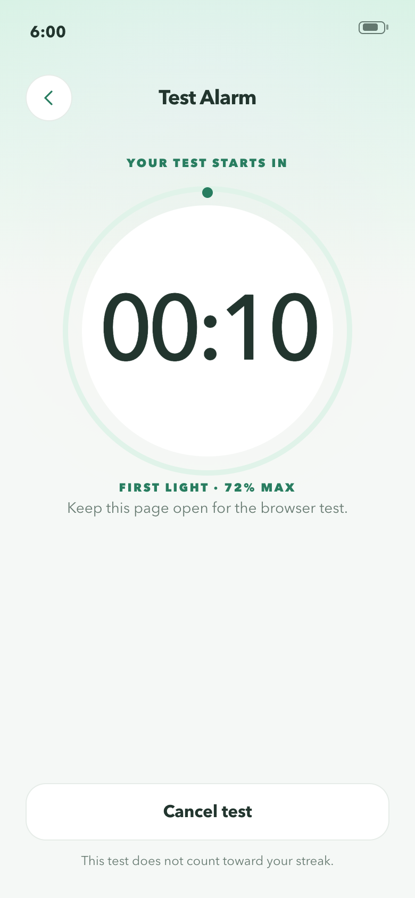
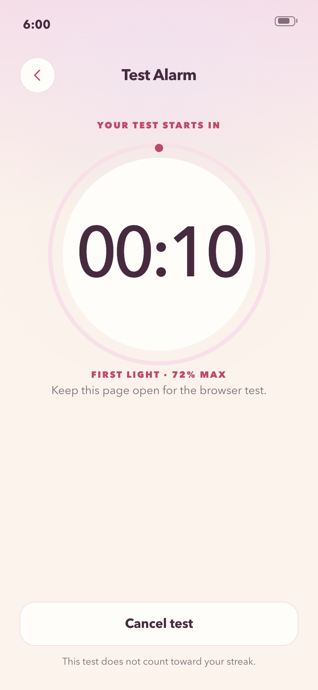

DRAMA ALARM / V5.0 / OFFICIAL FREE THEMESYour morning, your stage.
Daybreak and Velvet Stage share the same controls, core challenges and safety features.
01 / Home
Daybreak
Velvet Stage
14 / Settings
Daybreak
Velvet Stage
37 / Choose Your Theme
Daybreak
Velvet Stage
33 / Test Countdown
Daybreak
Velvet Stage